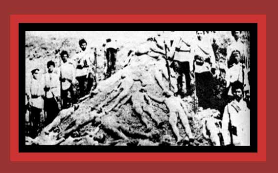

|
Besides starvation, the Turkish dictators had Armenians shot, stabbed and bayoneted to death, thrown off cliffs, and killed by exposure. Here Turkish soldiers pose with Armenians they presumably shot to death. For documentation, see Death By Government and Statistics of Democide. Source: "Pictures of the Armenian genocide".
NOTE: A question has been raised about the legitimacy of this photo, in that "the Turkish soldiers" appear to be wearing Russian and not Turkish army uniforms. |